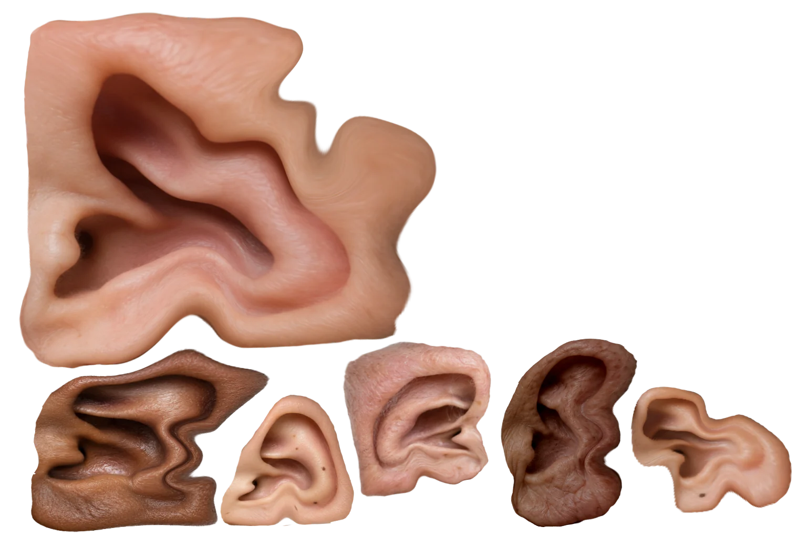

virtual try-on for ear jewelry
CONCEPT
耳の形状認識によるイヤーカフのAR試着
耳のかたちは、人によってちがう。
だからイヤーカフの見え方も、人によってちがうはず。
カメラをかざすだけで、耳の輪郭を読み取り
あなたの耳に合った位置でアクセサリーを試着できるWebシステムです。
画面での試着と商品詳細を確認したらそのまま購入も。
アクセサリーのオンラインショッピングを、より身近に。
（アプリのインストールは不要です。）